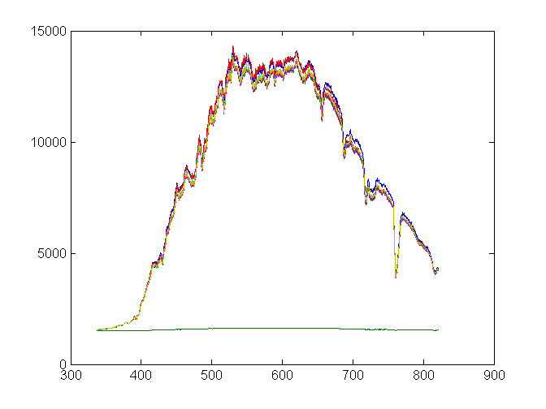

Contents
Excel = actxserver ('Excel.Application');
[nombreArchivos,path]=uigetfile('*.csv','Selecciona los archivos','Multiselect','on');
datosGND=cell(numel(nombreArchivos)+1,1024);
for i=1:numel(nombreArchivos)
tic
File=[path,char(nombreArchivos(1,i))];
if ~exist(File,'file')
ExcelWorkbook = Excel.Workbooks.Add;
ExcelWorkbook.SaveAs(File,1);
ExcelWorkbook.Close(false);
end
Excel.Workbooks.Open(File);
[~,~,raw]=xlsread1(File);
if i==1
datosGND(1,:)=raw(2,1:end);
end
datosGND(i+1,:)=raw(3,1:end);
toc
end
Excel.ActiveWorkbook.Save;
Excel.Quit
Excel.delete
clear Excel
datosGNDNum=cell2mat(datosGND(2:end,:));
LDORaw=datosGND(1,:);
isnum=cellfun(@isnumeric,LDORaw);
valoresNum=LDORaw(isnum);
LDONum=str2double(LDORaw);
valoresNum=cell2mat(valoresNum);
j=1;
for i=1:numel(isnum)
if isnum(i)==1
LDONum(i)=valoresNum(j);
j=j+1;
end
end
plot(LDONum,datosGNDNum);
Elapsed time is 0.313064 seconds.
Elapsed time is 0.411947 seconds.
Elapsed time is 0.437313 seconds.
Elapsed time is 0.463824 seconds.
Elapsed time is 0.717213 seconds.
Elapsed time is 0.456250 seconds.
Elapsed time is 0.500863 seconds.
Elapsed time is 0.481283 seconds.
Elapsed time is 0.471530 seconds.
Elapsed time is 0.495342 seconds.
Elapsed time is 0.474223 seconds.
Elapsed time is 0.474787 seconds.
Elapsed time is 0.478771 seconds.
Elapsed time is 0.507001 seconds.
Elapsed time is 0.497469 seconds.
Elapsed time is 0.506226 seconds.
Elapsed time is 0.501884 seconds.
Elapsed time is 0.519402 seconds.
Elapsed time is 0.513863 seconds.
Elapsed time is 0.542402 seconds.
Elapsed time is 0.540684 seconds.
Elapsed time is 0.551195 seconds.
Elapsed time is 0.547477 seconds.
Elapsed time is 0.549382 seconds.
Elapsed time is 0.561319 seconds.
Elapsed time is 0.557696 seconds.
Elapsed time is 0.602178 seconds.
Elapsed time is 0.577361 seconds.
Elapsed time is 0.606377 seconds.
Elapsed time is 0.621990 seconds.
Elapsed time is 0.610335 seconds.
Elapsed time is 0.623487 seconds.
Elapsed time is 0.623185 seconds.
Elapsed time is 0.640989 seconds.

Hay que escoger al azar unas cuantas LDO's y dibujar el grafico estilo Agus